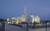
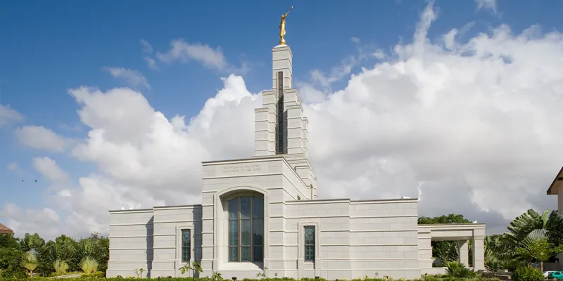
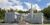
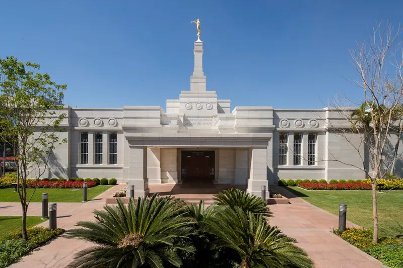
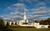

Temple Album
☰
Home
Old
New
Large
Small
Temples Around the World

Aba Nigeria Temple

Accra Ghana Temple

Anchorage Alaska Temple
Johannesburg South Africa Temple
Durban South Africa Temple

Asunción Paraguay Temple

Atlanta Georgia Temple
Washington DC Temple
Bern Switzerland Temple